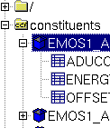

XMM-Newton Science Analysis System
sas (gui-1.52.10) [xmmsas_20170112_1337-16.0.0]
Tree window
In the left window you can navigate through your file system.
Navigation is similar to the task browser, except that you can also expand a tree by clicking your mouse button or using the arrow keys on your keyboard.

As you can see, some folders are presented with an icon similar to that of the
tool bar buttons. They are the pre-selected directories.
Next to your folders, this view will also show data sets as well as their images and/or tables.
Selecting an item in this window will change the right-pane of the browser.
XMM-Newton SOC/SSC -- 2017-01-12